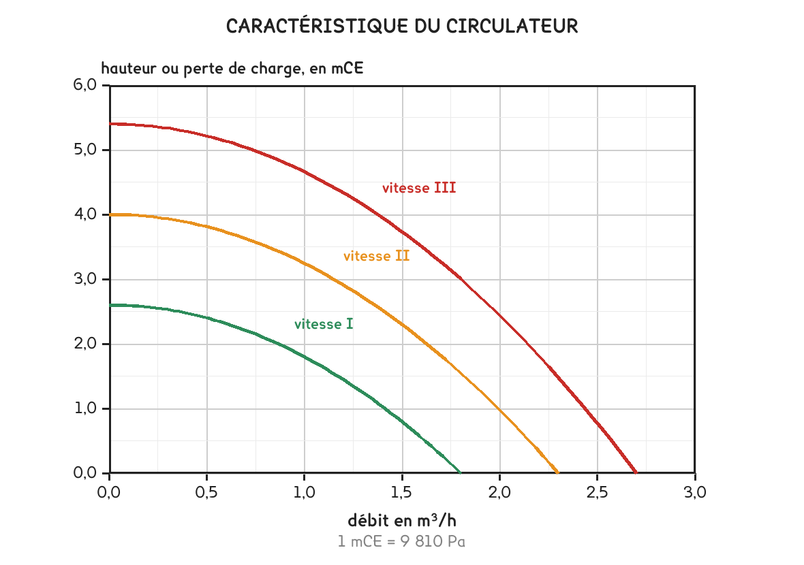
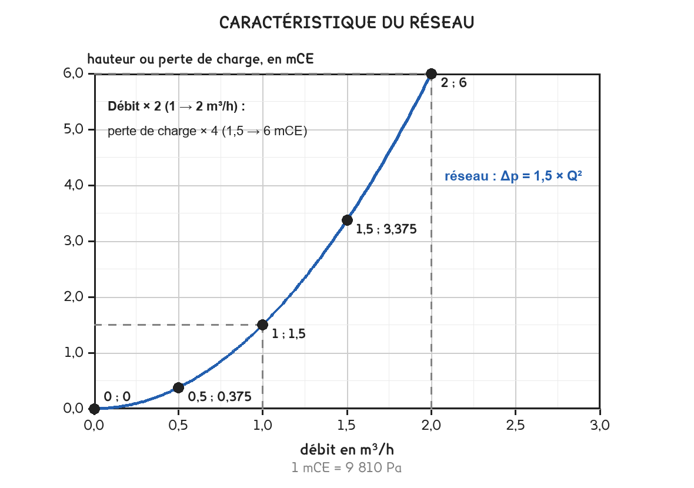
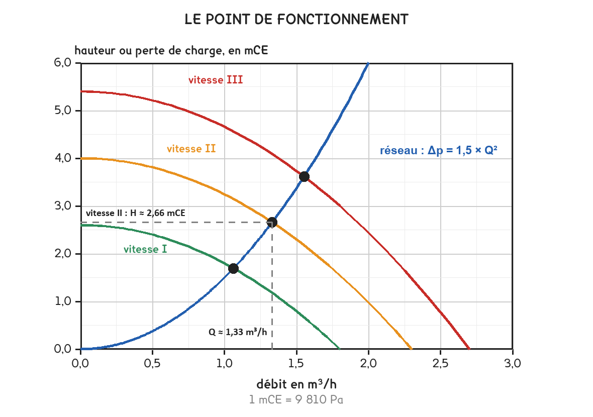
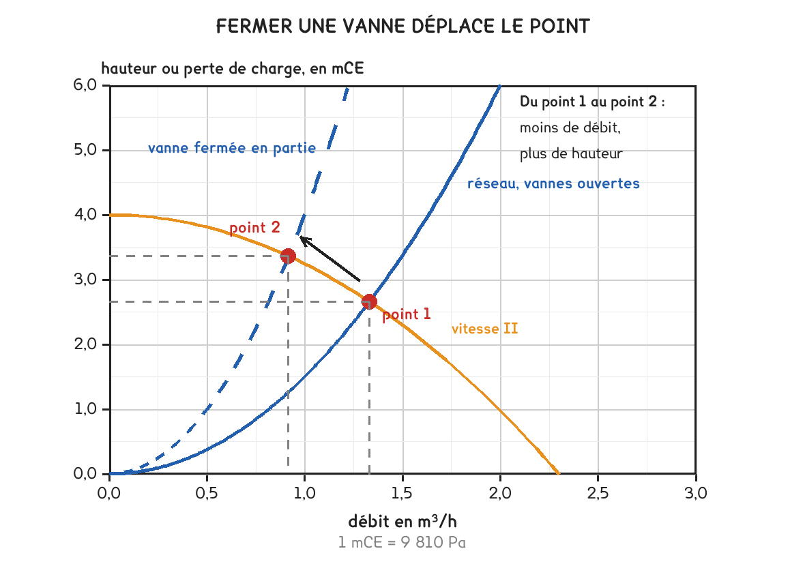
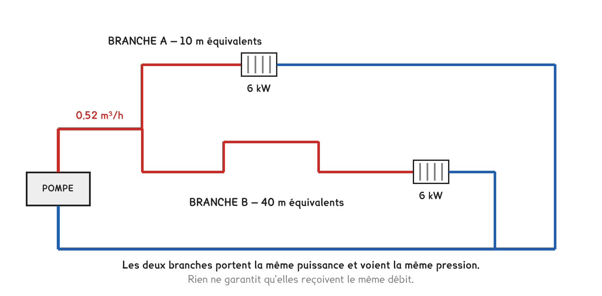

BTS FED option C · 2e année
Les salles du fond ont froid, l'accueil est trop chaud, et l'exploitant veut faire tourner le circulateur plus vite. Avant de lui répondre, il faut savoir ce qu'un circulateur sait faire, et comment l'eau se partage entre deux branches.
1 outil · 10 questions · 3 exercices · 9 replis · 5 figures
Savoirs travaillés
Dans une micro-crèche, les salles du fond sont froides le matin, l’accueil est trop chaud et ses robinets sifflent. L’exploitant propose de laisser le circulateur à sa plus grande vitesse.
Pour lui répondre, il faut trois choses : ce qu’un circulateur sait faire, ce que le réseau lui demande, et comment l’eau se partage entre deux branches. Le dossier est dans le polycopié : cette page rappelle le cours, pas les réponses.
La bouteille sépare la production de la distribution. La chaudière pousse son débit dans la bouteille, chaque groupe y prend le sien. Elle ne freine presque pas l’eau : chaque circulateur ne voit que son propre circuit.
Un groupe porte toujours les mêmes organes. Au départ, une vanne d’arrêt, le circulateur, un clapet anti-retour ; au retour, une vanne d’arrêt. Souvent, la poignée de chaque vanne porte un thermomètre : l’écart entre départ et retour dit si le débit est juste.
Deux branches qui partent du même point et reviennent au même point sont en parallèle : elles voient la même différence de pression, et c’est le débit qui se partage entre elles.
Pour suivre l’eau : le plan de la chaufferie, marches « Chauffage » et « Recharge du ballon ». Chaque organe y renvoie à sa carte.
Les cartes de la séance, à relire avant le contrôle : H-11 le circulateur, H-13 la vitesse variable, H-15 la bouteille, H-16 le collecteur, H-22 la vanne d’équilibrage, H-24 le robinet thermostatique, H-26 la vanne mélangeuse, H-33 le clapet, H-46 les prises de pression.
Le circulateur a une caractéristique, pas une valeur. À débit nul, il donne sa hauteur la plus grande ; plus il débite, moins il pousse. Un circulateur à trois vitesses porte donc trois courbes, l’une au-dessus de l’autre.

Le réseau a lui aussi sa courbe. En circuit fermé, l’eau qui monte d’un côté redescend de l’autre : le circulateur ne paie que les frottements. Ils ne croissent pas comme le débit, mais comme son carré.
Δp = k × Q²
Doubler le débit multiplie la perte de charge par quatre.
D’où vient cette courbe. On calcule Δp pour quelques débits, on place les points sur le même repère que la courbe du circulateur, et on les relie. Un circuit perd 1,5 mCE à 1 m³/h : k = 1,5 ÷ 1² = 1,5.
| Débit Q, en m³/h | 0 | 0,5 | 1 | 1,5 | 2 |
|---|---|---|---|---|---|
| Δp = 1,5 × Q², en mCE | 0 | 0,375 | 1,5 | 3,375 | 6 |

Elle part de zéro : sans débit, aucun frottement. À 2 m³/h, le circuit perd 6 mCE, quatre fois plus qu’à 1 m³/h pour deux fois plus de débit.
Exercice · A3-3
Un circuit perd 2,0 mCE quand il débite 0,8 m³/h. Quelle perte de charge aura-t-il à 1,2 m³/h ?
Le circulateur et le réseau sont traversés par le même débit, et la hauteur que donne l’un est celle que perd l’autre. Un seul débit satisfait les deux : c’est le point de fonctionnement.
On pose la courbe du réseau sur celle du circulateur. C’est la même parabole que plus haut, sur le même repère : chaque vitesse la croise en un point, qu’on lit sur les deux axes.

On ne le choisit pas, on le déplace. Changer de vitesse, c’est changer de courbe de circulateur. Fermer une vanne, c’est rendre le réseau plus résistant : la parabole se redresse, et le point remonte le long de la courbe du circulateur, vers moins de débit et plus de hauteur.

Déplacez la résistance du réseau : la parabole se redresse, et les trois points de fonctionnement glissent tous vers la gauche. L’outil démarre sur un circuit voisin de celui du polycopié, pas sur le même.
Le bureau d’études calcule un réseau vannes réglées. Livré vannes grandes ouvertes, le réseau est moins résistant que prévu : le débit total dépasse le calcul, et pourtant une branche peut manquer d’eau.
Deux branches en parallèle voient la même pression ; c’est le débit qui s’adapte. La branche courte, peu résistante, prend plus que sa part ; la longue manque d’eau. Une branche quatre fois plus résistante reçoit deux fois moins de débit.

Le manque d’eau se voit au thermomètre. À puissance voisine, une branche qui manque de débit rend son eau plus froide, et celle qui en reçoit trop la rend trop chaude. Le radiateur, lui, perd peu de puissance : c’est au bout du réseau, par grand froid, qu’on s’en aperçoit.
Une vanne d’équilibrage se ferme, elle ne s’ouvre pas. Elle ajoute une perte de charge, réglée une fois pour toutes, à la branche favorisée ; celle de la branche la plus défavorisée reste grande ouverte.
Δp = (Q ÷ Kv)²
1 mCE = 0,0981 bar : on convertit avant de calculer.
Un exemple. Une vanne doit créer 0,8 mCE à 0,4 m³/h. En bar, 0,8 × 0,0981 = 0,078 bar ; donc Kv = 0,4 ÷ √0,078 = 1,43 m³/h. On cherche cette valeur dans la notice, et on lit la position.
Exercice · A3-4
Une vanne d’équilibrage doit créer 0,5 mCE quand elle laisse passer 0,3 m³/h. Quel Kv doit-elle avoir ?
Exercice · A3-4
Le fond d’un bâtiment a froid, l’entrée a trop chaud. On propose de passer le circulateur à sa plus grande vitesse. Dites en trois lignes pourquoi l’équilibrage vaut mieux.
L’équilibrage ne fait pas économiser le circulateur. Le réseau réglé est plus résistant : le circulateur fournit plus de hauteur pour moins de débit. Ce qu’on économise, c’est le chauffage des pièces trop chaudes, et une chaudière à condensation qui retrouve un retour froid.
L’écart départ et retour s’écrase. La puissance transportée étant P = 1,163 × Q × ΔT, un débit doublé pour la même puissance divise l’écart par deux : une chaudière à condensation condense beaucoup moins.
Le bruit apparaît : la vitesse monte dans les tubes et dans les robinets thermostatiques, qui sifflent quand ils se ferment. Et le circulateur consomme pour rien, toute la saison de chauffe.
Le circulateur à vitesse variable règle lui-même sa vitesse pour tenir une pression. En Δp proportionnel, sa hauteur baisse quand les robinets ferment : c’est le mode qui convient aux radiateurs à robinets thermostatiques.
Le TD de la séance : « Le bureau du bout du couloir », partie 3 et conclusion. Pour vous entraîner seul, le mode libre de la même simulation : le circulateur et le réseau, puis l’équilibrage des quatre bureaux, avec ses défis.
Le cas « L’équilibrage de la résidence », dans les cartes de l’hydraulique, trente minutes, seul, avant la séance 10. Puis « Je me teste », en mode révision, sur les cartes H-11, H-13, H-15 et H-22.
Pour aller plus loin
La perte de charge s’écrit j = λ ρ v² / (2 d), et la vitesse est proportionnelle au débit. Le terme v² donne donc déjà un carré.
Reste λ, qui dépend du débit lui aussi, par Blasius, λ varie comme Re^−0,25, donc comme Q^−0,25. Le produit λ v² varie ainsi comme Q^1,75, pas exactement comme Q².
L’exposant réel est donc voisin de 1,75, pas de 2. On retient 2 parce que l’écart est faible sur la plage utile, parce que les singularités, elles, sont bien en Q², et parce qu’une parabole se trace à la main.
Un logiciel de calcul, lui, garde l’exposant exact. C’est l’une des rares approximations du programme dont l’écart est mesurable, de l’ordre de 5 % sur la perte de charge, ce qui reste sous l’incertitude des longueurs équivalentes.
Tout ce qui précède suppose un circulateur à trois vitesses fixes. Les circulateurs posés aujourd’hui sont à vitesse variable, et la réglementation l’impose depuis 2013 pour les circulateurs de chauffage.
Un tel circulateur ne suit plus une courbe mais une famille de courbes, et son électronique choisit celle qui maintient une consigne. Deux lois de régulation :
L’intérêt n’est pas le confort mais la consommation : la puissance absorbée d’une pompe varie comme le cube du débit. Réduire le débit de 20 % réduit la consommation de moitié.
C’est aussi pourquoi la question « sur quelle vitesse est-il réglé ? » n’a plus de réponse simple sur une installation récente, mais la question « quel débit obtient-on vraiment ? » reste, elle, exactement la même.
| Ce qu’on change | La courbe qui bouge | Ce que devient le débit |
|---|---|---|
| Changer de vitesse | celle de la pompe | monte ou descend |
| Brider une vanne d’équilibrage | celle du réseau, plus raide | descend |
| Encrasser le réseau | celle du réseau, plus raide | descend |
| Ouvrir un by-pass | celle du réseau, plus plate | monte |
| Fermer des robinets thermostatiques | celle du réseau, plus raide | descend |
Cette dernière ligne mérite attention : quand les thermostatiques se ferment, le réseau devient plus résistant et le débit chute. Avec un circulateur à vitesse fixe, la pression monte alors dans les branches restées ouvertes, d’où les sifflements de mi-saison, et l’utilité de la régulation à pression proportionnelle.
Le graphique se lit vite, mais il se lit mal, et à l’épreuve on demande parfois de vérifier une valeur, ce qui suppose de calculer. Les deux courbes ont chacune une équation simple, et leur croisement se résout à la main.
1. La courbe du réseau. Elle passe par l’origine et croît comme le carré. Un seul point suffit à la fixer. Reprenons le circuit de la séance 8 : 2,6 mCE pour 1,03 m³/h.
k = Δp / Q² = 2,6 / 1,03² = 2,43
2. La courbe du circulateur. Sur son domaine utile, elle se modélise bien par une parabole décroissante. Le catalogue en donne deux ou trois points, dont la hauteur à débit nul, le point le plus haut de la courbe.
H = H₀ − a Q², par exemple H = 6,6 − 1,5 Q²
3. Le croisement. Les deux hauteurs sont égales au point de fonctionnement : ce que la pompe donne est exactement ce que le réseau prend.
H₀ − a Q² = k Q² → Q = √( H₀ / (a + k) )
Q = √( 6,6 / (1,5 + 2,43) ) = 1,30 m³/h, et H = 6,6 − 1,5 × 1,30² = 4,08 mCE
Le circuit demandait 1,03 m³/h, il en reçoit 1,30 : 26 % de trop. Ce n’est pas une erreur de calcul, c’est la réalité de toute installation, les circulateurs se vendent par gammes, pas sur mesure.
Et voilà ce que ça coûte. La puissance transportée est imposée par les émetteurs, pas par la pompe. Le débit augmente donc à puissance constante, et c’est l’écart départ / retour qui absorbe la différence :
ΔT = 24 000 / (1 163 × 1,30) = 15,9 K au lieu des 20 K prévus
Un régime 70/50 devient un 70/54. Une chaudière à condensation reçoit un retour à 54 °C au lieu de 50 : elle condense moins. C’est le lien direct avec la séance 11, et c’est pourquoi le trop-plein de débit n’est jamais neutre.
La démarche est courte, et chacune de ses quatre étapes est une question possible à l’épreuve.
1. Le point de fonctionnement requis. Un débit, issu de la puissance et du régime ; une hauteur manométrique, issue du bilan de charge du tronçon le plus défavorisé. Chez nous : 1,03 m³/h et 2,6 mCE.
2. Le report sur les courbes du catalogue. On place ce point sur le réseau de courbes du fabricant. Le circulateur retenu est celui dont une courbe passe juste au-dessus du point requis. Juste au-dessus, pas très au-dessus.
3. Le point de fonctionnement réel. C’est le croisement, pas le point requis. Il donne un débit supérieur, et c’est lui qui décide de la vitesse de l’eau, du bruit et de la consommation.
4. La vérification. Le débit réel reste-t-il sous 1 m/s dans les tubes ? L’écart départ / retour reste-t-il acceptable pour le générateur ?
Un circulateur ne se choisit jamais « avec de la marge ». La marge se paie trois fois : en bruit, en consommation permanente, et en écrasement du ΔT. Si un doute subsiste, on prend la taille en dessous et on monte d’une vitesse, pas l’inverse.
Ce que porte une plaque signalétique, et qu’il faut savoir lire :
| Mention | Ce que c’est |
|---|---|
| H max ou H₀ | la hauteur à débit nul, le haut de la courbe |
| Q max | le débit à hauteur nulle, le bas de la courbe |
| P₁ | la puissance électrique absorbée, celle qui se paie |
| EEI | l’indice d’efficacité énergétique : plus il est bas, mieux c’est |
| I, II, III | les trois vitesses, donc les trois courbes |
Quand on change la vitesse de rotation d’une pompe ou d’un ventilateur, les trois grandeurs ne suivent pas la même loi. C’est le résultat le plus utile de toute la séquence, et il ressert en séances 17 et 19.
Q ∝ N · H ∝ N² · P ∝ N³
Le débit suit, la hauteur suit au carré, la puissance suit au cube.
| On passe la vitesse à | Le débit devient | La hauteur devient | La puissance devient |
|---|---|---|---|
| 75 % | 75 % | 56 % | 42 % |
| 50 % | 50 % | 25 % | 12 % |
Descendre d’un cran de vitesse coûte un quart du débit et fait économiser près de 60 % de la consommation. C’est le calcul qui justifie à lui seul le circulateur à vitesse variable, et c’est exactement la même loi qui justifie le débit d’air variable sur une CTA.
Ces lois relient un même appareil à deux vitesses. Elles ne comparent pas deux pompes différentes, et elles ne disent rien de la courbe du réseau, qui ne bouge pas quand la pompe ralentit. Le point de fonctionnement, lui, se déplace le long de la parabole du réseau.
Le contrôle de vraisemblance. Si vous trouvez qu’une pompe ralentie de 25 % consomme 75 % de sa puissance, vous avez appliqué la loi du débit à la puissance. Le bon réflexe : la puissance est le produit d’un débit et d’une pression, donc elle subit les deux effets à la fois.
Un circulateur consomme peu à l’instant (quelques dizaines de watts) mais il tourne cinq à sept mille heures par an. C’est cette durée qui fait la facture.
Le rendement d’un ancien circulateur à rotor noyé et moteur asynchrone plafonne autour de 20 à 25 %. Le reste part en chaleur dans l’eau. Un circulateur récent à moteur synchrone à aimants permanents, piloté par variateur, dépasse largement le double, et surtout il module.
L’indice EEI (Energy Efficiency Index) a été institué pour rendre les appareils comparables sur un profil de charge annuel, et non à un seul point de fonctionnement. Plus il est bas, meilleur est l’appareil. La réglementation européenne d’écoconception a progressivement interdit la mise sur le marché des circulateurs au-dessus d’un seuil, ce qui a fait disparaître les modèles à trois vitesses fixes du neuf.
La valeur du seuil et son calendrier ne se récitent pas : ils se lisent dans le règlement en vigueur ou dans le CCTP du projet. Ce qui est à retenir, c’est le sens de l’indice et le fait qu’un remplacement de circulateur soit aujourd’hui l’un des gestes de rénovation au temps de retour le plus court.
Le calcul de temps de retour, qui est une question d’épreuve classique : on compare deux puissances absorbées sur la durée annuelle de fonctionnement, on convertit en euros, et on divise le surcoût d’achat par l’économie annuelle. C’est exactement l’outil de la séance 5.
Un bureau d’études double parfois la pompe. Les deux montages n’ont ni le même but ni le même effet, et les confondre est une erreur classique.
En parallèle, pour le débit. Les deux pompes puisent au même endroit et refoulent au même endroit. À hauteur donnée, les débits s’ajoutent. La courbe résultante se construit en doublant l’abscisse à chaque ordonnée.
Mais le réseau, lui, n’a pas changé : sa parabole est toujours la même. Le nouveau point de fonctionnement monte le long de cette parabole, donc le débit total est loin d’être doublé, typiquement +30 à +40 %. C’est le piège du montage : deux pompes ne font pas deux fois le débit.
En série, pour la hauteur. L’une refoule dans l’autre. À débit donné, les hauteurs s’ajoutent. On y recourt quand un réseau est très résistant : grande hauteur d’immeuble, réseau très long.
Pourquoi on double vraiment, dans neuf cas sur dix : ce n’est ni pour le débit ni pour la hauteur, c’est pour la redondance. Deux pompes en parallèle avec permutation automatique, une qui tourne et une en secours, sur un bâtiment où l’arrêt du chauffage n’est pas acceptable, un hôpital, un musée, une piscine. Le CCTP l’écrit alors noir sur blanc, et la GTB gère la permutation : c’est un point de commande de la séance 20.
Une machine frigorifique a elle aussi un point de fonctionnement, et il se construit comme celui de cette séance : deux courbes qui se croisent.
| Sur un circuit d’eau | Sur un circuit frigorifique |
|---|---|
| la pompe fournit une hauteur | le compresseur aspire un débit massique |
| le réseau oppose une résistance | le détendeur laisse passer un débit |
| l’intersection donne débit et pression | l’intersection donne les deux pressions, HP et BP |
Le compresseur aspire d’autant plus de masse que la pression d’aspiration est haute ; le détendeur laisse passer d’autant plus que l’écart HP − BP est grand. Les deux courbes vont en sens contraire, donc elles se croisent en un seul point, et c’est ce point qui fixe les pressions lues au manomètre.
Ce que cela explique immédiatement. Un évaporateur encrassé ou un filtre à air bouché échange moins : la pression d’aspiration tombe. Un condenseur sale ou un ventilateur arrêté évacue moins : la pression de refoulement monte. Dans les deux cas, la machine se déplace le long de ses courbes, sans qu’aucun composant soit en panne.
C’est le raisonnement qui évite de changer un compresseur pour rien. Des pressions anormales sont d’abord le symptôme d’un déplacement du point de fonctionnement, pas une panne de machine. On cherche l’échange avant de soupçonner l’organe, exactement la démarche de la séance 9 sur le débit d’un circuit.
Le diagnostic frigorifique consiste presque entièrement à lire ce déplacement. C’est la partie la plus intellectuelle de l’attestation, et la plus proche de ce que vous savez déjà faire.
Cette page rappelle la séance. Elle ne remplace pas le polycopié et ne donne aucun corrigé. Tous les calculs se font dans votre navigateur ; rien n'est enregistré.